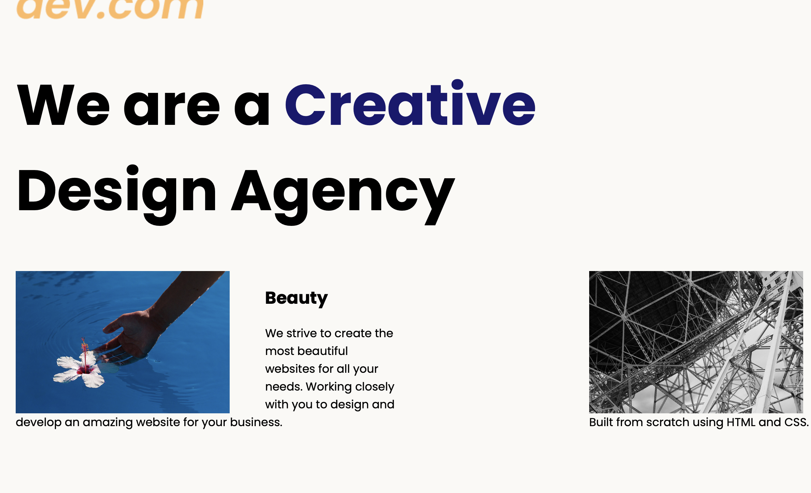
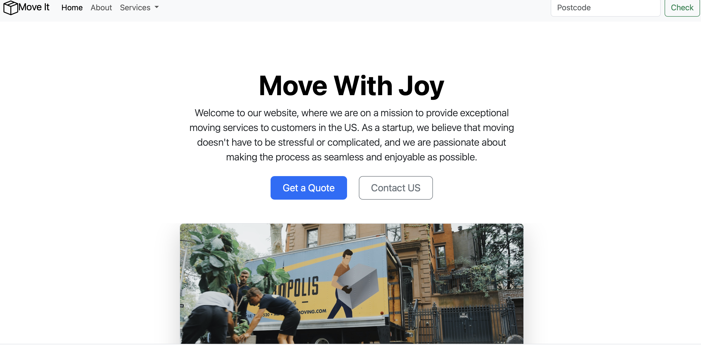
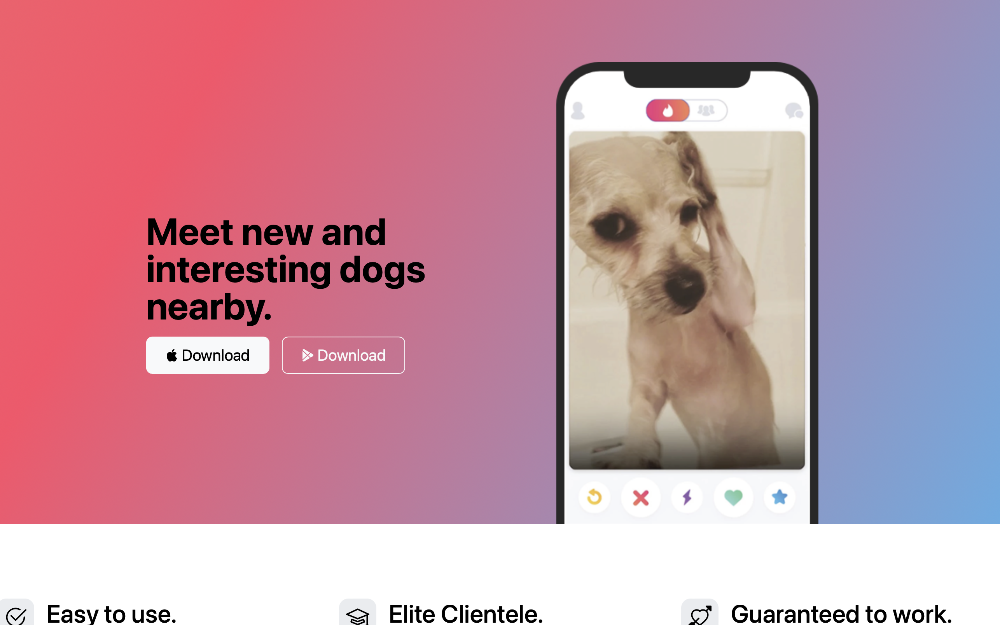
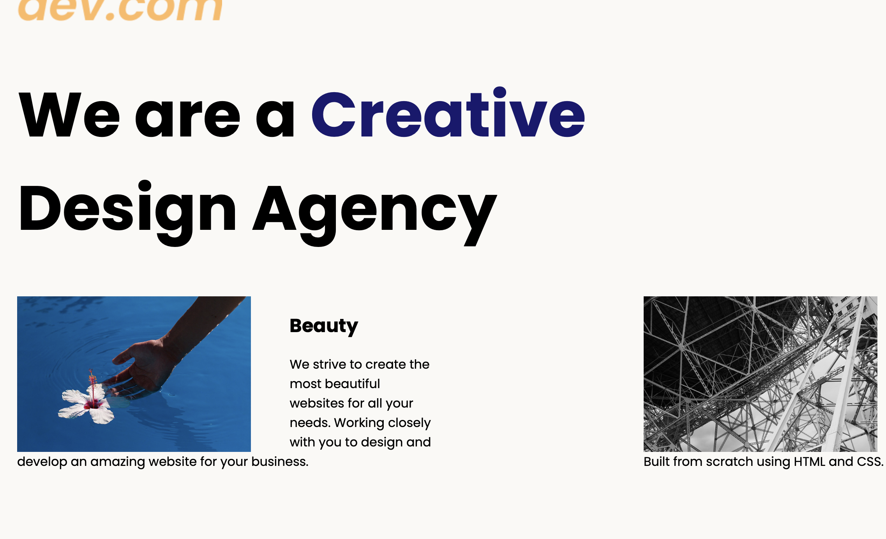
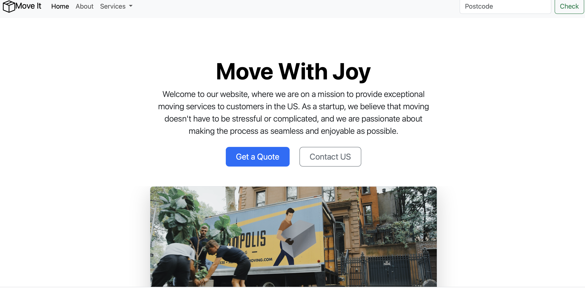
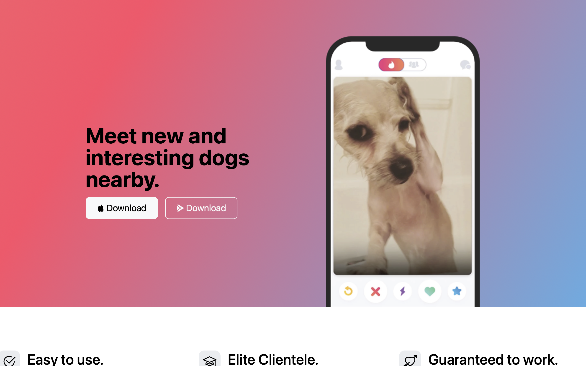

Some of my latest Work
Created a home page using Flexbox
Recreated Mondrian's artwork using grid display

Using Boostrap created a website homepage
Second Boostrap website
This portfolio showcases my journey in learning web development through a series of practical exercises focused on HTML, CSS, and Bootstrap. These projects were created as part of Angela Yu's Udemy course from The App Brewery, allowing me to build a solid foundation in front-end development. Here, you'll find a collection of small but meaningful exercises that reflect my growing understanding of web technologies, design principles, and responsive layouts.
Thank you for taking the time to explore my work!
Created a home page using Flexbox
Recreated Mondrian's artwork using grid display
Using Boostrap created a website homepage
Second Boostrap website
